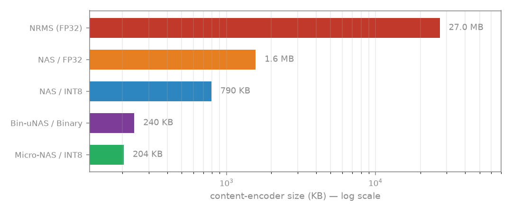

۴.۱ Neural Architecture Search (NAS) چیست؟
NAS به جای اینکه انسان معماری شبکه را طراحی کند، یک الگوریتم خودکار بهترین معماری را جستجو میکند. در پروژه ما، بهترین ترکیب channels، depth و out_dim را مییابد.
Evolutionary Search
جمعیتی از معماریها ایجاد میشود، بهترینها انتخاب و جهشدار میشوند
Supernet-Free
هر معماری مستقل آموزش میبیند — بدون اشتراک وزن
Objective
بهترین cosine similarity با anchor (teacher) زیر محدودیتهای حافظه
۴.۲ فضای جستجو
| هایپرپارامتر | معنی | بازه |
|---|---|---|
channels | عرض conv blocks | {32, 64, 96, 128, 192, 256} |
depth | تعداد لایههای conv | {1, 2, 3, 4, 5} |
out_dim | ابعاد embedding خروجی | {64, 128, 256, 384} |
۴.۳ سه بازوی اصلی
ما سه رژیم مختلف جستجو داریم که هر کدام با محدودیتهای متفاوت کار میکنند:
| بازو | Precision | محدودیت | هدف |
|---|---|---|---|
| NAS | FP32 | سست (RTX 5070، بدون محدودیت MCU) | حداکثر دقت |
| Micro-NAS | INT8 | سخت (STM32H7) | تعادل دقت–حافظه |
| Binarized Micro-NAS | Binary | سخت (STM32H7) | کوچکترین اندازه |
محدودیتهای سخت Micro-NAS (هدف on-device)
این محدودیتها عمداً سختگیرانهتر از سقف واقعی STM32H7 (۲MB Flash / ۱MB RAM) انتخاب شدهاند تا در این مقیاسِ کوچکِ encoder متنی واقعاً اثر بگذارند و بازوی Micro-NAS از NAS جدا شود.
| منبع | محدودیت |
|---|---|
| Flash (اندازه) | ≤ 256 KB |
| RAM (activation) | ≤ 128 KB |
| MACs | ≤ 2 M |
۴.۴ معماریهای یافتهشده
| بازو | Channels | Depth | Out_dim | AUC (INT8) | Size |
|---|---|---|---|---|---|
| NAS | 256 | 4 | 384 | 0.647 | 790 KB |
| Micro-NAS ⭐ | 64 | 5 | 384 | 0.610 | 204 KB |
| Bin. µNAS | 96 | 2 | 384 | 0.546 (Binary) | 240 KB |
۴.۵ مقایسه اندازه (نمودار)

۴.۶ کد جستجو (سادهشده)
from src.config import load_config from src.nas import search cfg = load_config() # precision و محدودیت از روی نام بازو تعیین میشود: # "nas" → FP32 (سست) | "micro_nas" → INT8 | "binarized_micro_nas" → Binary results = search.search(cfg, "micro_nas", generations=15, population=30) # خروجی مرتبشده بر اساس کیفیت (بهترین اول) best = results[0] print(best["arch"], best["quality"], best["size_kb"], best["feasible"])
🧪 آزمون فصل ۴
۱ هدف NAS در این پروژه چیست؟
۲ کدام بازو محدودیت سخت STM32H7 را رعایت میکند؟
۳ Micro-NAS / INT8 چه معماری یافت؟
۴ چرا NAS بازوی بدون محدودیت (سست) داریم؟
💻 تمرین عملی
تمرین ۴.۱ — بررسی نتایج NAS
import json nas = json.load(open("artifacts/nas_results.json")) # ساختار: {arm: [list of best archs]} — هر بازو یک لیست است for arm, records in nas.items(): best = records[0] print(f"[{arm}] arch={best['arch']} quality={best['quality']} size_kb={best['size_kb']}")
تمرین ۴.۲ — محاسبه اندازه مدل
from src.config import load_config from src.nas import search cfg = load_config() archs = { "NAS / int8 (256-4-384)": ((256, 4, 384), "int8"), "Micro-NAS / int8 (64-5-384)": ((64, 5, 384), "int8"), "Bin.µNAS / binary (96-2-384)": ((96, 2, 384), "binary"), } for name, ((ch, d, od), prec) in archs.items(): fp = search.arch_cost(cfg, {"channels": ch, "depth": d, "out_dim": od}, prec) print(f"{name}: {fp['size_kb']:.1f} KB, {fp['macs']/1e6:.2f}M MACs")